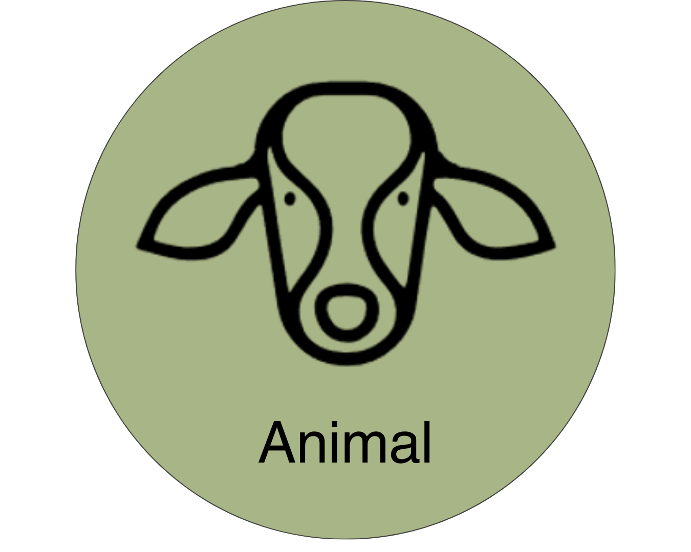

4 Animal Module

4.1 Introduction
The Animal Module simulates individual animals on a daily basis throughout each stage of life from birth until removal from the herd. In addition to the dynamic Monte-Carlo models that determine the occurrence of events throughout each animal’s life, the Animal Module uses process-based, dynamic models to simulate the following processes:
- Individual animal growth
- Gestation and milk production
- Estimation of nutrient requirements and feed intake
- Enteric emission and manure excretion
4.1.1 Animal Life Cycle
The animal life cycle is driven by Monte Carlo stochastic processes that simulate the growth, production, reproduction, and culling of individual dairy cattle animals and shares aggregated outcomes with the herd management sub-module to manage herd dynamics on a daily basis.
The life cycle module represents the variation in animal performance through the use of Monte Carlo Simulation methods (Reuven and Kroese 2017). Monte Carlo simulation relies on random draws from probability distributions rather than assigning fixed values. In this model, two main strategies are used:
- Event-based, in which a random draw from a uniform distribution (U(0,1)) is compared to the probability of an event occurring to simulate if that event occurs, and
- Population-based, in which a random draw from a known distribution of attribute values is assigned to an animal at instantiation. Probability distributions used for that purpose are Normal Gaussian or Empirical.
Each animal within the RuFaS herd progresses through five main life stages (calf, Heifer I, Heifer II, Heifer III, and Cow) as illustrated in the figure below.
- Calves progress to Heifer I when their age reaches the user-defined input for weaning day
- Heifer I progresses to Heifer II when their age reaches the user-defined input for breeding start day
- Heifer II animals that successfully conceive become Heifer III’s when the number of days left in their pregnancy is equal to the user-defined input for prefresh days (default 21)
- When a Heifer III calves, she becomes a Cow for the rest of her life on the RuFaS farm
- Cows cycle through lactating and non-lactating phases until they are removed from the herd due to a failure to conceive or a user-provided probability for sale or death within each parity (lactation).
When a HeiferIII or Cow reaches full gestation length, they start lactating and a new calf object is created. The calf is assigned a birthweight according to a user-informed random distribution. All male calves are recorded and removed from the farm on day 1 of their life. Female calves either remain on the farm or are sold on day 1, determined by an event-based Monte Carlo method informed by the user-defined percent of female calves that are kept.
4.2 Herd-level Processes and Management
4.3 Herd Initialization
In RuFaS code, the term “herd initialization” is used to refer to both the process of generating an animal population file and of selecting from that population to create a specific herd at the start of a simulation. In this doc, those two processes will be differentiated by calling them “Generation” and “Selection”, respectively.
“Animal population” can refer to both groups of animals (the pool of animals generated, and the herd of animals selected). In the code, the population is sometimes referred to as “pre_animal_population” and “post_animal_population” to differentiate whether the specified group of animals exists before or after the random selection of individuals to create a herd.
4.3.1 Introduction to Herd Initialization
Every simulation begins with a herd consisting of calves, heifers, and dry and lactating cows. This herd comes to be through a two-step process:
- A population of animals is generated through simulation or loaded from data (pre-animal-population). The animals in that herd should reflect the attributes of animals in the herd to be modeled.
- Animals are randomly selected with replacement from the pre-animal-population to be in the initial herd, based on group numbers and characteristics that reflect the distribution of animals within the herd being modeled. Note that the animals in the herd on day one will have attributes of the pre-animal-population and may deviate from the desired herd to be modeled.
For the rest of the simulation, animals enter the herd through birth as newborn calves or purchased replacements (heiferIII’s).
| Before Simulation | Simulation Initiation | During the Simulation |
|---|---|---|
Generate (simulate) or load an Animal Population file (pre-animal- population). The animals present at the start of the simulation, and those available in the replacement market, are drawn from this file. |
Herd is established by random selection of animals from the Animal Population to match the user-specified group sizes and age/stage distribution (post- animal-population). Management attributes, including lactation- curve parameters, are assigned as each animal enters the herd. |
New animals enter via (a) birth or (b) purchase| of heifers from the | replacement market. Purchased animals inherit| two attributes from the | population file, | - Breed | - Mature bodyweight | |
Relevant Inputs
| Variable | Definition | Default | Min | Max |
|---|---|---|---|---|
| Initial_animal_num | The initial number of animals that serve as a starting point for the population generation simulation | 10000 | 0 | - |
| Simulation_days | The number of days to simulate for the population generation simulation | 5000 | 0 | - |
| Calf_num | Number of Calves (head) – The initial number of pre-weaned calves | 8 | 2 | – |
| HeiferI_num | Number of HeiferI animals (head) – The initial number of heifers that are weaned but not yet bred | 44 | 2 | – |
| HeiferII_num | Number of HeiferII animals (head) – The initial number of heifers that are either eligible for breeding (based on user-inputted Breeding Start Day for heifers), or in early pregnancy | 38 | 2 | – |
| HeiferIII_num_springers | Number of HeiferIII animals (head) – The initial number of close-up heifers (within the user-defined close-up period, e.g., Prefresh Day) | 5 | 2 | – |
| Cow_num | Number of Cows (head) – The initial number of dry and lactating cows | 100 | 6 | – |
| Replace_num | replacements (head) – Number of replacement animals available in the replacement market | 5000 | 50 | – |
| Lactating_fraction | Fraction of cows that are lactating. Used during herd initialization | 0.8356 | 0 | 1 |
| Parity_fractions: 1, 2, 3, 4, 5 | Fractions of the milking animal population that are parity 1, 2, 3, 4, and 5+. The sum must equal 1.0 | 0.36, 0.26, 0.18, 0.11, 0.09 | 0 | 1 |
Relevant Outputs
After the animals have been selected from the animal population to create the initial herd, a summary of the Population (pre-selection pool, aka pre-animal-population) and of the Initial herd (selected animals, aka post-animal-population) is provided to the output manager.
Class and function: AnimalModuleReporter.report_animal_population_statistics
Output variables: - .population_{…} - .initial_{…}
{…} includes: breed, number of animals of each class (calf, heiferI, heiferII, heiferIII, cow), number of cows by parity and lactation status, average age of animals within each class, distribution of age of animals within each class, average body weight of animals within each class, average cow days in milk, days in preg, parity, and calving interval.
4.3.2 Methodology
When a simulation begins, the HerdFactory class generates or loads the pre-animal-population, from which it selects and compiles the post-animal-population with an appropriate distribution of animal ages and stages to serve as the starting herd for simulation.
Designation of an Animal Population
- Option 1: Creating a new Animal Population An animal population can be generated as a stand-alone simulation task that creates and saves a pre-animal-population file as the output based on the user Animal Module inputs. Or, the animal population can be generated as the first step of a regular simulation task which then uses that generated pre-animal-population to select from and create the post-animal-population to use for the subsequent herd simulation. See the documentation about Task Manager for more information about how to generate a new pre-animal-population.
The _generate_animals() method creates the pre_animal_population, with the option to save those animals to file at the end of the generation process.
Calves are created according to the number specified by the user (initial_animal_num), some are sold based on user inputs, and those remaining proceed through select daily updates (growth, reproduction, milk, and transition through the appropriate life stages) for the user-specified number of days (simulation_days). The simulation occurs similarly to the regular life cycle simulation process, but with an extended period and large number of animals. There are a few notable distinctions:
- After 3000 days of simulation (specified in animal_constants), a copy of each heiferIII is saved to the replacement herd. The copy is made on the day when she is ready to transition to a lactating cow (ready to give birth), so that when the copy enters the herd as a purchased heiferIII during the actual simulation, she will give birth the very next day.
- If a cow has made it to parity six without being culled, she is removed from the herd. (The maximum parity of cows kept in the generated herd is five).
After the simulation_days number of days, the full herd contains a mixture of calves, heifers, cows, and replacements. The core status information and life history of each animal are either saved to file or passed for random sampling to create the post-animal-population.
- Option 2: Point to an existing Animal Population Alternatively, the pre-animal-population will be loaded from a specified Animal Population input file consisting of calf, heifer, cow, and replacement objects.
Herd Selection The _random_sample_with_replacement() method selects animals from each of the following groups: calf, heiferI, heiferII, heiferIII, replacement, lactating cows by parity for parities 1-5, and dry cows by parity for parities 1-5.
Animals are sampled randomly with replacement from the pre-animal-population according to the numbers, parity fractions, and milking cow fraction specified in the animal input file. The resulting list of animals is returned as the post-animal-population and summaries of the pre- and post-animal-populations are reported to the output manager.
4.4 Pens and Animal Grouping
4.4.1 Introduction to Grouping
All animals in RuFaS are assigned to a pen which is used to summarize nutrient requirements for diet formulation and feeding, aggregate enteric methane and manure excretions for reporting and passage to the Manure Module. Each pen tracks and updates daily a list of animals in the pen, the stocking density, the average nutrient requirement of the animals in the pen, the ration being fed to that pen, the manure excreted, and the methane emitted. In addition, constant attributes of each pen include the type of pen it is (freestall, tiestall, open lot, compost bedded pack barn), the type of animals that can be in that pen, the number stalls, the manure management practices associated with that pen, and the distance to the milking parlor for lactating cows. Each day after the HerdManager has updated the status of each animal and determined which animals need to be bought or sold, the animals are added and removed from pens as needed.
Relevant Inputs
| Variable | Definition | Default | Min | Max |
|---|---|---|---|---|
| id | The index of the pen | NA | 0 | NA |
| pen_name | The name or identifier of a given pen | NA | ||
| animal_combination | The valid combinations of animal types that can be in a pen. CALF = Calves; GROWING = HeiferI’s and HeiferII’s; CLOSE_UP = HeiferIII’s and Dry Cows; LAC_COWS = Lactating Cows | CALF, GROWING, CLOSE_UP, LAC_COWS | ||
| vertical_dist_to_milking_ parlor | The elevation gain (in meters) between the pen and the milking parlor | 0.1 | 0 | NA |
| horizontal_dist_to_milking_ parlor | The distance (in meters) between the pen and the milking parlor | 10 | 0 | NA |
| number_of_stalls | The number of stalls in the pen | 1000 | 0 | NA |
| pen_type | The type of pen (freestall, tiestall, open lot, compost bedded pack barn) | freestall | freestall, tiestall, open lot, compost bedded pack barn | |
| max_stocking_density | The maximum ratio of the number of animals in the pen to the number of stalls in the pen | 1.2 | 0.5 | 5 |
| manure_management_ scenario_id | The ID number of the manure management practices that are used for this pen (scenarios are defined in manure management schema) | 0 | 0 | NA |
Relevant Outputs
- number_of_animals_in_pen_[id]_[AnimalCombination] - reports the number of animals in each pen each day.
ration_per_animals_for_pen_[id]_[AnimalCombination] - reports average dry matter intake of an animal in the pen at the time of the ration formulation.
ration_per_animals_for_pen_[id]_[AnimalCombination].[RUFAS_feed_id] - reports the amount of each feed that is delivered per animal in the pen
ration_nutrient_amount_for_pen_[AnimalCombination].[nutrient] - is reporting the amount of each of the following nutrients that is provided by the ration per animal in the pen (all reported in kilograms unless otherwise indicated)
4.4.2 Methodology
Animal Grouping To translate from the AnimalTypes needed to track an animal’s life stages and the combinations of animals that are allowed to be grouped into a single pen, a new variable called AnimalCombination is created that combines some AnimalTypes to facilitate sorting into pens. The AnimalCombination class is defined in enums.py and includes the following mapping from AnimalTypes to AnimalCombinations:
| Animal Combination | Animal Type |
|---|---|
| CALF | Calves |
| GROWING | Heifer I and Heifer II |
| CLOSE_UP | Heifer III and Non-lactating Cows |
| LAC_COW | Lactating Cows |
Currently there are only two options for assigning AnimalCombinations to pens.
Option 1 The first and most commonly used option for grouping animals is to assign one AnimalCombination to each pen such that there is at least one pen for the 4 AnimalCombinations: CALF, GROWING, CLOSE_UP, and LAC_COW.
Option 2 In some cases, and especially in very small farms, a user might wish to represent a scenario where all growing animals, pregnant heifers, and non-lactating cows are housed together. In this case, there is an option to have a pen that houses both GROWING and CLOSE_UP animals such that the there is at least one pen with each of the 3 AnimalCombination inputs: CALF, GROWING_AND_CLOSE_UP, and LAC_COW.
Pen Sizing: Due to oscillations in the exact number of animals in each animal type, it is strongly recommended that the stocking density is at least 120% of the expected number of animals in each pen.
Class: Pens are inare initiated from the Pen class by the HerdManager at the beginning of the simulation and, if needed, an additional pen is created to accommodate animals if the animal numbers have exceeded the max stocking density.
Remove_animals_by_ids - This function is called when the HerdManager calls for: remove_animal_from_pen_and_id_map.
It is pen specific and removes the animal from the pen and the animal ID from the animal ID map that tracks the animals in the pen.
**_add_new_animals** - This function is called by Pen.update_animals which is in turn called by HerdManager._add_animal_to_pen_and_id_map. Thus, when HerdManager initiates addition of animals to each pen, this function executes the addition of those animals _animal_nutritional_requirements
4.5 Ration Formulation
The diet recipes in RuFaS are either formulated through least-cost formulation (Li et al. 2022) or provided by the user for each of 4 animal categories (calves, growing heifers, dry and close-up cows, and lactating cows). The composition of the available feeds are provided by a feed library that was adapted from the (National Academies of Sciences, Engineering, and Medicine 2021). The amount of feed required by the farm is tracked by pen and multiple pens of each animal category can be simulated; however, at this time, the RuFaS model can only accept 1 user-defined diet per animal category even if there are multiple simulated pens for that animal category.
In practice, animal feeding on dairy farms is a constantly evolving process that responds to fluctuations in feed availability, animal requirements and responses, and management goals. Although the feed delivery algorithms will make small modifications to the diet recipe in response to animal nutrient requirements and adjust the total amount of feed delivered based on the number of animals and their requirements, the diversity and degree of fluctuation in the diets is less than what is expected on a commercial dairy. The RuFaS feed library can also be modified or expanded on by changing the compositions of the existing feeds or by adding new feeds.
Regardless of whether or not a user chooses to provide their own ration or have RuFaS build and feed a ration optimized for least-cost, RuFaS needs a set of ingredients to work from. The RuFaS feed library should be consulted for the full list of ingredients and ingredients that are in both the NASEM and NRC libraries can be used. Users interested in feeding a ration that they define, need to provide a list of ingredients and their relative % dry matter intake for each animal class (pre-weaned calves, growing heifers, close-up animals, and lactating cows).
If a user would like RuFaS to use the list of ingredients to formulate a least-cost ration, it is imperative that proper costs are inputted for each ingredient listed, but the % dry matter intake in the user defined ration percentages does not need to be included. Feed costs need to be entered in kg/DM. RuFaS will then use all the ingredients available (based on costs and inventory available if the feed is homegrown) to create a ration that meets the nutritional requirements of the animal class and is cost-optimized.
For the time being, only one set of feeds and ration formula can be provided for each animal class.
4.5.1 Energy and Nutrition Requirements
NRC: Calculating Nutrient Requirements of Dairy Cattle
Below are the calculations utilized based on the energy and nutrient requirements of dairy cattle as reported by the NRC and more recently the NASEM National Research Council (2001), National Academies of Sciences, Engineering, and Medicine (2021).
Calculations are included for the following requirement categories:
- Energy (Maintenance, Activity, Growth, Pregnancy, Lactation)
- Protein (Maintenance, Growth, Pregnancy, Lactation)
- Minerals (Maintenance, Growth, Pregnancy, Lactation)
- Dry Matter Intake
- Amino Acids (NASEM only)
Where appropriate, requirement calculations are differentiated by animal age and reproductive status.
4.5.2 Nutrient Requirements of Dairy Cattle (NRC)
Energy Requirements For details about the variables included in each calculation, please refer to tbl-energy-req for a full list.
Maintenance The maintenance requirement is calculated based on metabolic body weight (body weight\(^{0.75}\)).
- Lactating and Dry Cows ::: {#eq-an-nrc-1} \[ CBW = MW * 0.06275 \qquad \text{(AN.NRC.1)} \] :::
\[ CW = (18 + (DOP - 190)\cdot 0.665)\left(\frac{CBW}{45}\right), \text{ if } DOP > 190.0 \qquad \text{(AN.NRC.2)} \]
Otherwise
\[ NEmaint = 0.08\cdot (BW - CW)^{0.75} \qquad \text{(AN.NRC.3)} \]
- Heifers : The maintenance requirement is calculated based on metabolic body weight (body weight(^{0.75})), body condition score, and the previous month’s temperatures.
\[ CBW = MW * 0.06275 \qquad \text{(AN.NRC.1)} \]
\[ CW = (18 + (DOP - 190)\cdot 0.665)\left(\frac{CBW}{45}\right), \text{ if } DOP > 190.0 \qquad \text{(AN.NRC.2)} \]
Otherwise
\[ BCS9 = (BCS5 - 1) * 2 + 1 \qquad \text{(AN.NRC.6)} \]
\[ NEmaint = (BW - CW)^{0.75}\cdot (0.086\cdot (0.8 + (BCS9 - 5)\cdot 0.05) + 0.0007 (20 - PrevTemp)) \qquad \text{(AN.NRC.7)} \]
Activity Activity requirement is proportional to body weight and daily walking distance. A grazing system and hilly topography will cost additional energy.
- Lactating and Dry Cows ::: {#eq-an-nrc-8} \[ NEa1 = 0.0012\cdot BW \qquad \text{(AN.NRC.8)} \] :::